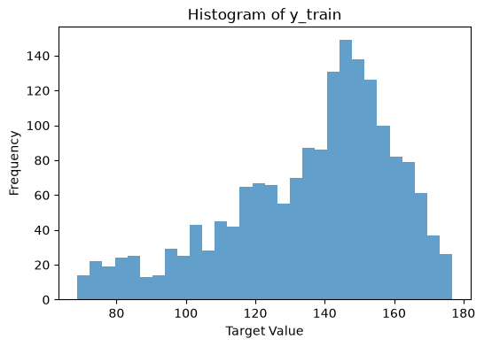
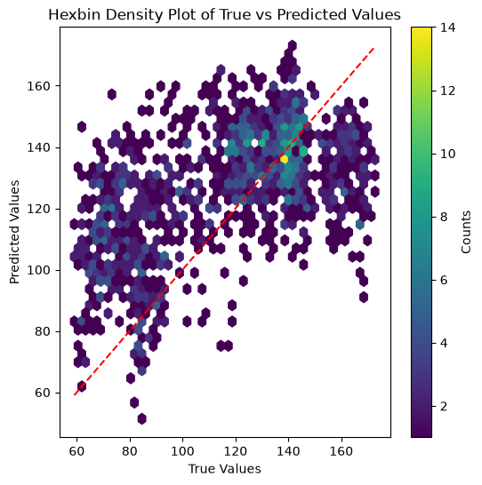
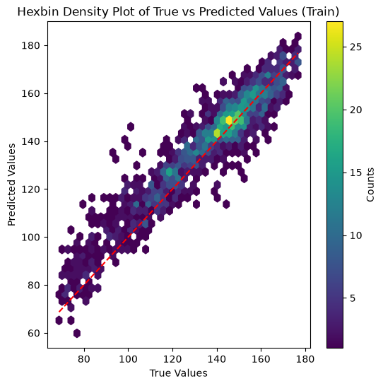

Time series regression belongs to the class of supervised learning and is defined as the task of predicting a continuous target variable based on time series input data.
Distance-based: Methods that use distance measures to compare time series (e.g., \(k\)-nearest neighbors).
Interval-based: Methods that extract features from intervals of the time series (e.g., time series forest regression).
Deep learning-based: Methods that use deep learning architectures.
Kernel-based: Methods that use kernel functions to measure similarity between time series (e.g. time series support vector regression).
Composed methods: Methods that combine multiple models.
Again, we observe that these categories can directly be mapped to those in Section 7.1 and Chapter 8.
An easy baseline method for time series regression is to use a \(k\)-nearest neighbors regressor with a suitable distance measure for time series, e.g. dynamic time warping. In contrast to nearest neighbor in classification, where the predicted label is determined by e.g. a majority vote of the nearest neighbors, in nearest neighbor regression the predicted value is typically computed as the average (or weighted average) of the target values of the nearest neighbors. This is implemented in sktime as KNeighborsTimeSeriesRegressor.
Also tree-based methods like random forests can be adapted for time series regression by simply taking e.g. the mean value of the target variable of the samples in a leaf node as the predicted value. This is implemented in sktime as TimeSeriesForestRegressor. Note that this is (as of v1.1.0) not a very parametrizable implementation; the only tunable parameter is the number of estimators (trees) and the minimum width of the intervals.
In this section we will have a brief look at a deep-learning based method in the context of time series regression, namely a convolutional neural network (CNN) based regressor.
9.1 Convolutional Neural Network Regressor
Convolutional Neural Networks (CNN), by design, are able to capture local patterns in time series data through the use of convolutional layers. These layers apply filters that slide over the input data, allowing the model to learn local temporal patterns that are important. At the same time, CNNs can also capture global patterns by stacking multiple convolutional layers and using pooling operations. This hierarchical structure enables the model to learn both local and global features of the time series data, making CNNs versatile for various time series tasks.
Zhao et al. (2017) propose a CNN architecture specifically designed for time series classification. The architecture consists of a series of 1D convolutional layers followed by a pooling layer. The convolutional layers are responsible for extracting local features from the time series data, while the pooling layer helps to reduce the dimensionality and capture more global patterns. After the convolutional and pooling layers, the model includes a fully connected layer (the authors refer to it as a feature layer) that maps the extracted features to \(n\) output nodes, where \(n\) is the number of classes. The node with the highest value determines the predicted class.
For regression, sktime provides CNNRegressor, which is based on the architecture described in Zhao et al. (2017). To adapt the architecture for regression tasks, the final layer is modified to have a single output node with a linear activation function that predicts a continuous value instead of class probabilities.
In this example, we will use the IEEEPPG dataset Tan et al. (2020), which focuses on heart rate monitoring during physical exercise using wrist-type photoplethysmographic (PPG) signals. The dataset consists of two PPG signals and three-axis acceleration signals. The goal is to predict ECG values from the PPG and acceleration signals. All signals were sampled at 125 Hz.
9.1.1 Imports
Code
import tempfileimport matplotlib.pyplot as pltimport numpy as npimport pandas as pdimport requestsfrom sklearn.metrics import root_mean_squared_errorfrom sklearn.preprocessing import MinMaxScalerfrom sktime.datasets import load_from_tsfile_to_dataframefrom sktime.regression.deep_learning import CNNRegressorfrom tensorflow.keras.optimizers import Adamfrom tslearn.preprocessing import TimeSeriesScalerMinMaxnp.random.seed(42) # for reproducibility
9.1.2 Loading the dataset
Code
def download_data(url: str) ->tuple:"""Download and load a time series dataset from a URL. Args: url: URL to the .ts file. Returns: Tuple of (X, y) DataFrames/Series. """with requests.get(url, stream=True) as r: r.raise_for_status()with tempfile.NamedTemporaryFile(suffix=".ts", delete=False) as f:for chunk in r.iter_content(chunk_size=8192): f.write(chunk) fp = f.name X, y = load_from_tsfile_to_dataframe(fp)return X, ytestdata_url ="https://zenodo.org/records/3902710/files/IEEEPPG_TEST.ts?download=1"traindata_url ="https://zenodo.org/records/3902710/files/IEEEPPG_TRAIN.ts?download=1"X_test_raw, y_test_raw = download_data(testdata_url)X_train_raw, y_train_raw = download_data(traindata_url)y_train_raw = y_train_raw.astype(float)y_test_raw = y_test_raw.astype(float)
First we look at the raw training data. Each row corresponds to one sample in the dataset. The data comes in five columns, where each column represents a different signal source (PPG or acceleration signal). Note that each entry in the DataFrame is itself a time series.
The following plot shows the distribution of the target values in the training set.
plt.figure(figsize=(6, 4))plt.hist(y_train_raw, bins=30, alpha=0.7)plt.xlabel("Target Value")plt.ylabel("Frequency")plt.title("Histogram of y_train")plt.show()

To feed the data into the CNN, we first need to convert the dataframe into a so-called tensor (in this case a 3D array).
def convert_df_to_tensor(df: pd.DataFrame) -> np.ndarray:"""Convert a DataFrame of time series to a 3D numpy tensor. Args: df: DataFrame where each cell contains a time series. Returns: 3D array of shape (n_samples, ts_length, n_features). """ tensor = np.array( [[df.iloc[i, j].values for j inrange(df.shape[1])] for i inrange(len(df))] ) tensor = np.transpose(tensor, (0, 2, 1))for i, j inzip(range(len(df)), range(len(df.columns))):assert np.array_equal(df.iloc[i, j].values, tensor[i, :, j])return tensorX_train_tensor = convert_df_to_tensor(X_train_raw)X_test_tensor = convert_df_to_tensor(X_test_raw)
Let us check the shapes orf the resulting tensors.
The training data set has 1768 samples, each consisting of 5 channels (PPG and acceleration signals) with a length of 1000 time steps (which are 8 seconds at 125 Hz).
Neural networks are generally trained on normalized data. We will use a leaky ReLU activation function in our CNN, which works best with input data within a [0, 1] range.
Unfortunately the TimeSeriesScalerMinMax from tslearn needs the data in the shape (n_samples, n_timestamps, n_channels), while the CNN expects (n_samples, n_channels, n_timestamps), so we need to swap the last two axes again after scaling.
To verify the performance of the trained model, we now predict the target values for the test set and compute the root mean squared error (RMSE) between the predicted and true target values.
Keep in mind, that we have to inverse transform the predicted target values back to the original scale before computing the RMSE.
A scatter plot showing true against predicted values reveals that the model tends to overestimate smaller values and underestimate larger values.
plt.figure(figsize=(6, 6))plt.hexbin(y_test_raw, y_pred.flatten(), gridsize=40, cmap="viridis", mincnt=1)plt.xlabel("True Values")plt.ylabel("Predicted Values")plt.title("Hexbin Density Plot of True vs Predicted Values")plt.plot( [y_test_raw.min(), y_test_raw.max()], [y_test_raw.min(), y_test_raw.max()], "r--")plt.colorbar(label="Counts")plt.show()

Especially when encountering a model that performs worse than expected, it is important to analyze potential reasons for this behavior.
Here, we predict the training set using the trained model. Usually, the training error should be significantly lower than the test error. If this is not the case, we can suspect issues with the code, model (architecture) or with the data itself.
Plotting the histogram of residuals on training set
Plotting the scatter plot of true vs. predicted values on training set
plt.figure(figsize=(6, 6))plt.hexbin(y_train_raw, y_pred_train.flatten(), gridsize=40, cmap="viridis", mincnt=1)plt.xlabel("True Values")plt.ylabel("Predicted Values")plt.title("Hexbin Density Plot of True vs Predicted Values (Train)")plt.plot( [y_train_raw.min(), y_train_raw.max()], [y_train_raw.min(), y_train_raw.max()],"r--",)plt.colorbar(label="Counts")plt.show()

The model is able to fit the training data quite well, indicating that the code is implemented correctly and the model architecture is complex enough to capture the underlying patterns in the data. Still, the performance on the test set is significantly worse than on the training set. This suggests that the model is likely overfitting the data, which could be due to various factors such as e.g. insufficient training data, or lack of regularization or that the test data distribution differs significantly from the training data distribution.
While these results are not fully satisfying, the results align with those reported by Tan et al. (2021) for other simpler neural network architectures on this dataset.
Tan, Chang Wei, Christoph Bergmeir, Francois Petitjean, and Geoffrey I Webb. 2020. “IEEEPPG Dataset.” Zenodo, June. https://doi.org/10.5281/zenodo.3902710.
Tan, Chang Wei, Christoph Bergmeir, François Petitjean, and Geoffrey I Webb. 2021. “Time Series Extrinsic Regression: Predicting Numeric Values from Time Series Data.”Data Mining and Knowledge Discovery 35 (3): 1032–60.
Zhao, Bendong, Huanzhang Lu, Shangfeng Chen, Junliang Liu, and Dongya Wu. 2017. “Convolutional Neural Networks for Time Series Classification.”Journal of Systems Engineering and Electronics 28 (1): 162–69. https://doi.org/10.21629/JSEE.2017.01.18.